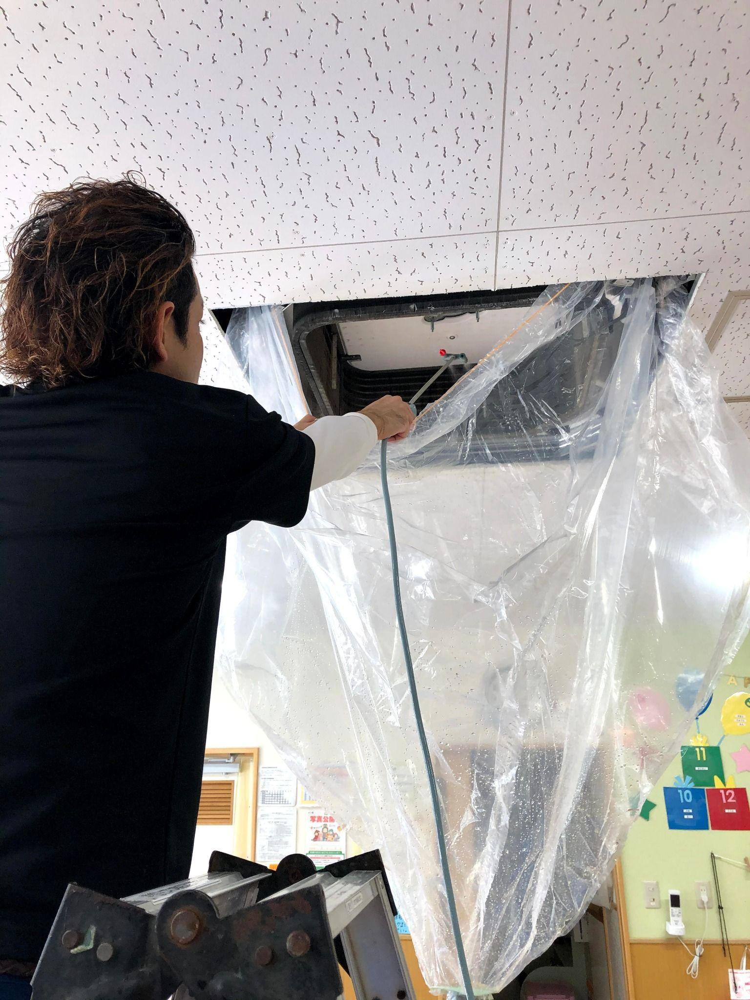
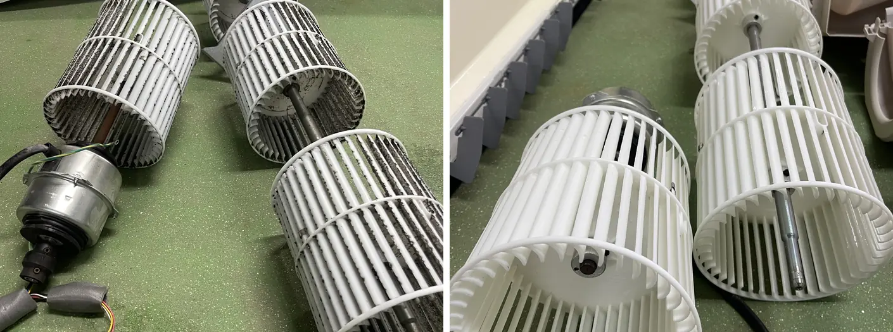
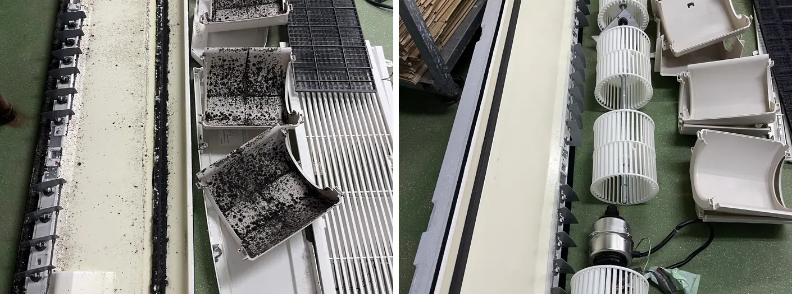

沖縄の店舗・事務所・施設向け｜業務用エアコン・床清掃
店舗のエアコンも、床も。
清掃の窓口は、ひとつ。
「清掃業者ごとの手配が大変」「営業への影響が心配」。そんな店舗・施設の清掃を、天カセ・天吊の分解洗浄から床洗浄・ワックスまでまとめてご相談いただけます。
- 清掃業17年
- 第二種電気工事士資格保有
- 賠償責任保険・限度額1億円
現場写真・台数・床面積など、分かる範囲で大丈夫です。

 床ワックスBefore / After
床ワックスBefore / After
ご相談から施工まで
エアコンも床も。清掃の手配をもっとシンプルに。
相談窓口を一本化
エアコン清掃と床洗浄を別々に手配する手間を減らし、相談・見積りをまとめられます。
段取りをシンプルに
営業日・定休日・現場環境を踏まえ、施工順序や日程調整をご案内します。
費用をまとめて検討
台数・床面積・清掃範囲を整理して、お見積りをまとめてご案内します。
※一括依頼による割引や費用削減を保証するものではありません。機種・現場条件によって施工範囲・料金は変わります。
業務用エアコン清掃
天カセ・天吊の洗浄。
技術と施工実績をご確認ください。
天井埋込・天井吊下型エアコンの洗浄は、機種・台数・設置条件によって施工内容が変わります。実際の分解・洗浄写真で作業の様子をご確認ください。

天カセ・天吊の
分解洗浄
天井カセット型（天カセ）・天井吊下型（天吊）を中心に、複数台の業務用エアコン清掃にも対応。汚れやにおい、ドレン詰まり・水漏れなどの相談も、機種と設置条件を確認しながらご案内します。
- 機種・型番で作業範囲を確認
- 複数台の施工相談
- 水漏れ・不具合相談
実際の施工写真
取り外した内部パーツも、ここまできれいに。
実際の清掃で取り外した内部パーツの洗浄前後を比較できます。汚れの状態と洗浄後の違いを写真でご確認ください。

床の印象も、
ここまで変わります。
床洗浄・ワックスも、エアコン清掃と一緒にご相談いただけます。床材・面積・汚れの状態を確認し、営業スケジュールに配慮してご案内します。
竣工清掃・改修後清掃・ガラス清掃などもご相談ください。
実際のお客様の声
作業の丁寧さや仕上がりへの評価も。
施工内容の説明だけでは分からない、対応や仕上がりへの感想です。施工カテゴリと口コミの原文をご確認いただけます。
とても丁寧に作業していただき、エアコンも綺麗になりました。料金も良心的だと思います。
大変綺麗にしていただいて大満足です。 今後は定期的に、汚れる前にお願いしたいと思いました。
出典：くらしのマーケット「ＢＣサービス」店舗の天井埋込エアコン清掃・フロアクリーニングの口コミ（件数は2026年11月17日確認時点）。掲載文は個々の投稿の抜粋です。清掃対象・汚れ・施工条件により仕上がりは異なります。
BCサービスの安心材料
現場を知るからこそ、
安心できる窓口に。
清掃業17年の現場経験と第二種電気工事士資格を活かし、現場の状態や作業条件を確認してご案内します。
- 17年清掃業の現場経験
- 第二種電気工事士資格保有
- 一括相談施工・設備の相談窓口
BCサービスが相談窓口となり、自社対応の清掃と協力会社・メーカー等との連携が必要な修理・入替・専門工事を整理して、作業範囲と費用をご案内します。
万が一の破損事故にも備えています。
賠償責任保険加入｜補償限度額 1億円
※すべての事故について補償をお約束するものではありません。保険の適用範囲・条件、保険金の支払いは契約内容と事故状況等によります。
BCサービス代表 照屋 昴
代表が仕事で大切にしていることを読むそのほかのご相談
こんなご相談にも対応します。
業務用エアコンの不具合
清掃のご依頼とあわせて、水漏れ・ドレン詰まり・フロートスイッチ不具合などの相談もお受けします。機種・エラー表示・設置状況を確認し、清掃と修理の対応範囲をご案内します。
- ドレン詰まり・水漏れ相談
- エラー停止・部品交換相談
- 複数台の施工順序・営業中の段取り
店舗・施設の清掃全般
エアコンだけでなく、床・ガラス・竣工清掃などもまとめてご相談ください。必要に応じ協力会社と連携します。
- 床洗浄・ワックス・ガラス清掃
- 竣工清掃・改修後清掃
- 対応エリア：沖縄本島内（案件規模により相談）
写真からのお見積り
見積り相談は、
分かる範囲の写真と情報から。
料金は機種・台数・天井高・床面積・作業時間などで変わります。写真から概算をご相談いただけますが、施工内容・金額は現場条件を確認して事前にご案内します。追加作業・追加費用が必要な場合も、着手前に内容を説明します。
メーカー・形状・設置場所が分かる写真
水漏れ・におい・ワックスの状態など
定休日・営業時間外などの希望
万が一にも備えて。 BCサービスは賠償責任保険に加入しています（補償限度額1億円）。保険金の支払いは契約条件・事故状況等によります。
よくあるご質問について
よくあるご質問
業務用エアコン清掃は営業時間外でも相談できますか？
はい、店舗や事務所の営業時間に合わせて相談できます。営業前・営業後・定休日など、現場の状況に応じて作業しやすい時間帯を確認します。台数や設置場所によって作業時間が変わるため、事前に写真や台数を送っていただけると段取りを組みやすくなります。
天井埋込型や天井吊下型のエアコンも対応できますか？
天井埋込型・天井吊下型・壁掛け型など、業務用エアコンの清掃相談に対応しています。機種や設置状況によって作業内容が変わるため、型番・設置写真・台数を確認したうえで、対応可否や料金目安をご案内します。
ドレンホースの詰まりや水漏れも相談できますか？
はい、ドレンホースの詰まりや水漏れの相談も可能です。業務用エアコンでは、排水経路に汚れがたまることでドレンパンに水が残り、水漏れやエラー停止につながる場合があります。症状によって対応範囲が変わるため、写真やエラー内容を確認してご案内します。
フロートスイッチの交換にも対応できますか？
フロートスイッチの不具合や交換相談にも対応可能です。ドレンパン内の水位を検知する部品のため、不具合があるとエラー停止や水漏れにつながることがあります。ただし、機種や部品状況によって対応方法が変わるため、型番や症状を確認してからのご案内になります。
エアコン清掃と床清掃をまとめて依頼できますか？
はい、エアコン清掃と床清掃をまとめてご相談いただけます。別々の業者へ依頼すると日程調整や発注管理が大変になりやすいため、同じ現場でまとめて相談したい場合は、清掃範囲・床材・エアコン台数を確認して段取りをご案内します。
複数台まとめて見積りできますか？
複数台の見積り相談も可能です。店舗・事務所・施設では、設置場所や台数によって作業順序、養生範囲、作業時間が変わります。台数・機種・設置場所が分かる写真を送っていただけると、確認がスムーズです。
現場写真だけで概算相談できますか？
写真だけでも概算相談は可能です。正確な金額は現場状況や機種確認後になりますが、エアコンの型番、設置状況、汚れ具合、台数、床清掃の有無などが分かる写真を送っていただけると、作業内容や料金目安を事前に整理しやすくなります。
お問い合わせ
エアコン1台から複数台、床ワックスまで。
まとめてご相談ください。
写真が揃っていなくても大丈夫です。現場の状況を整理し、必要な作業とお見積りをご案内します。